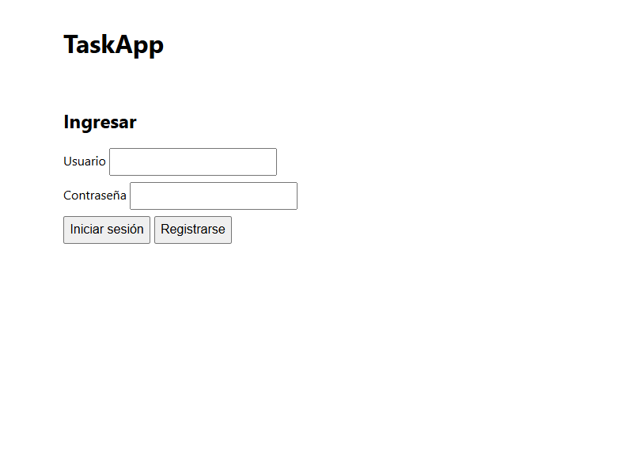
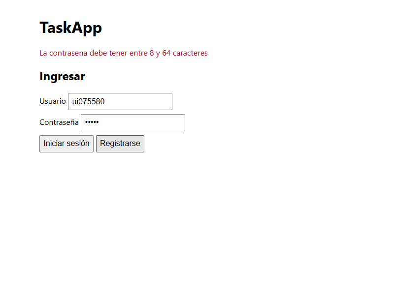
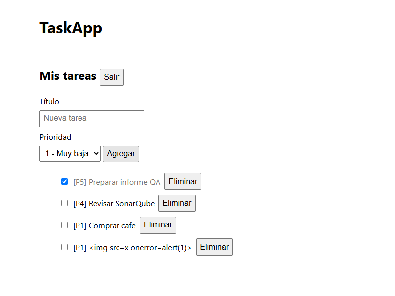
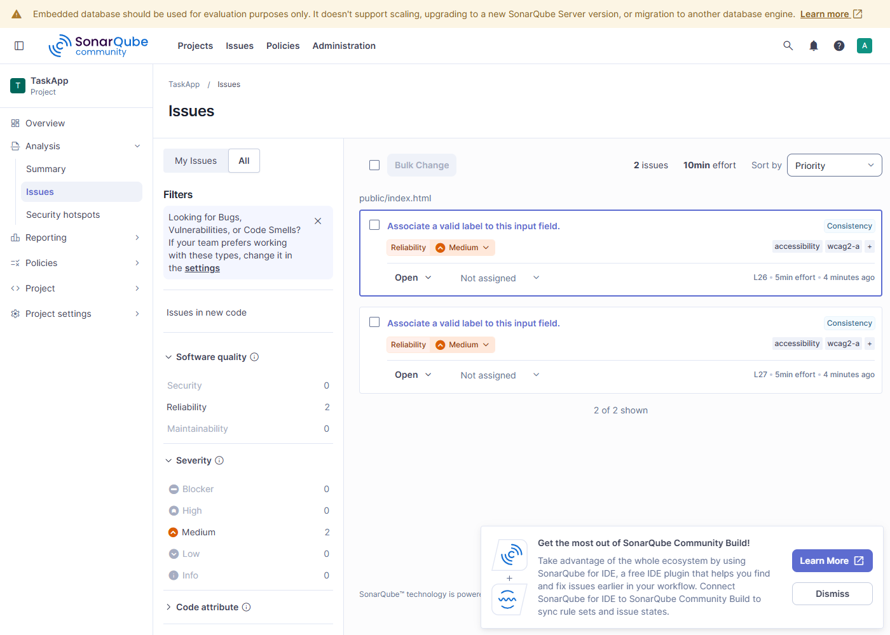
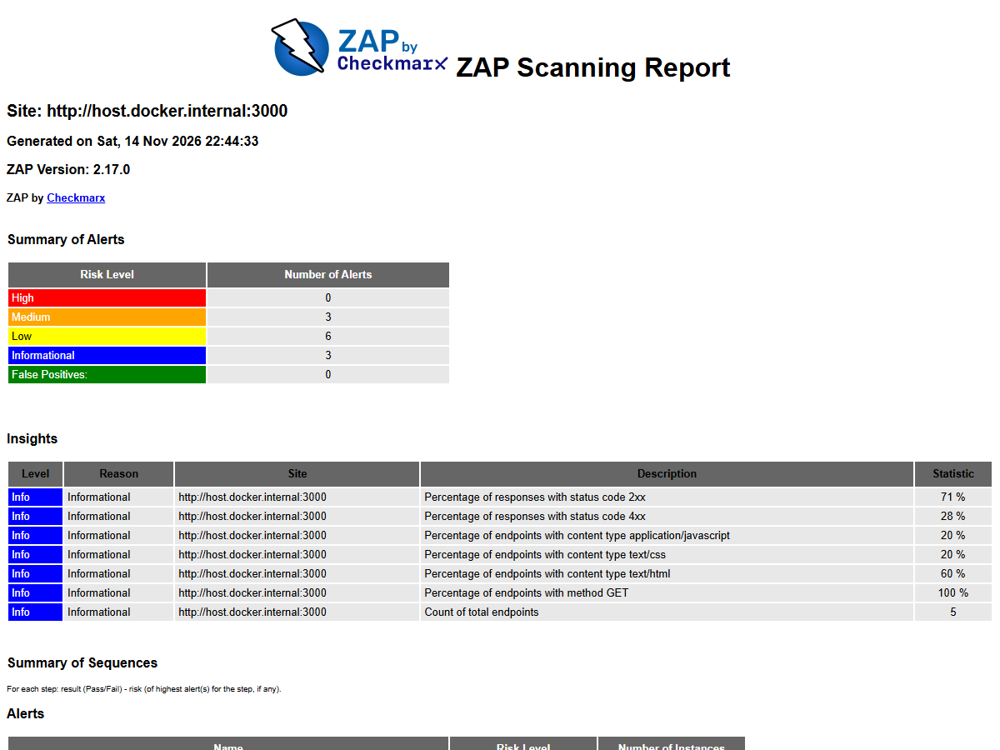
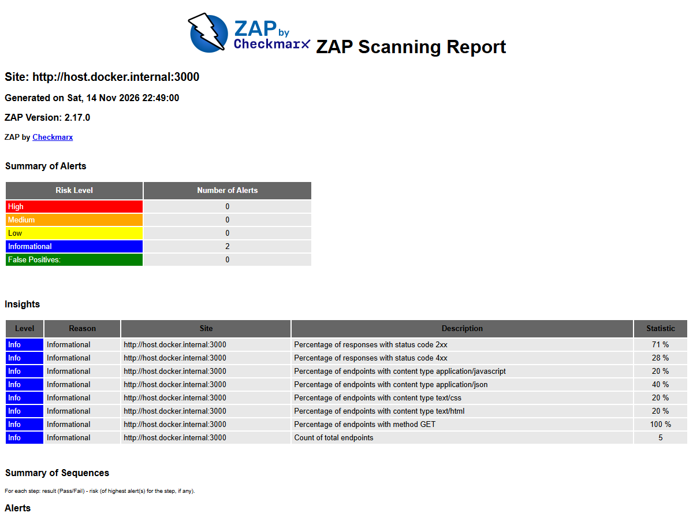
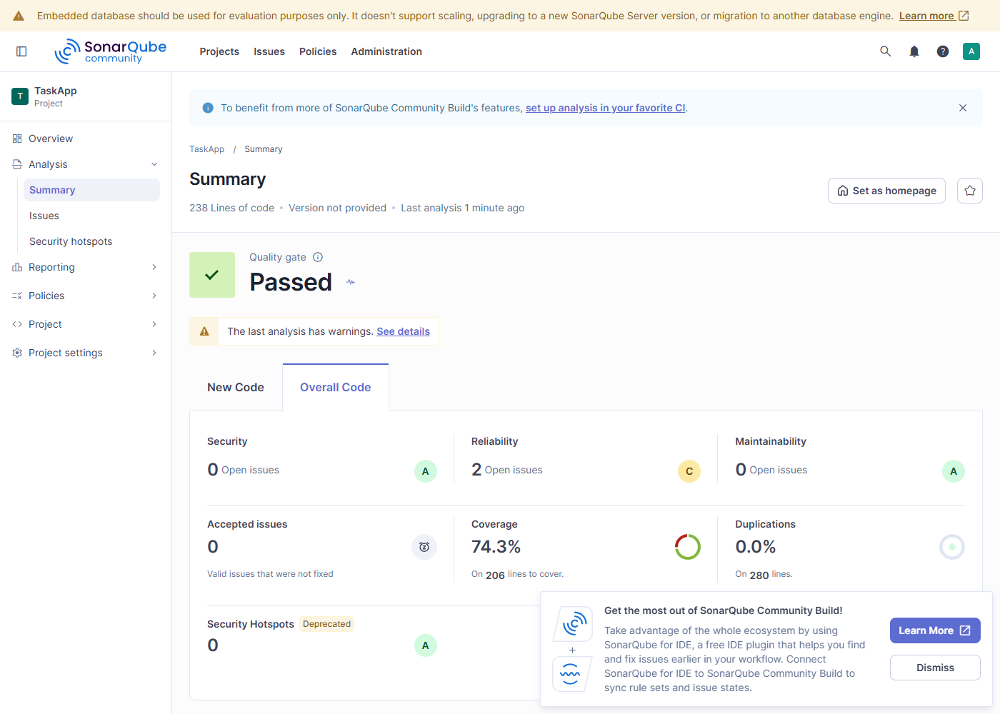
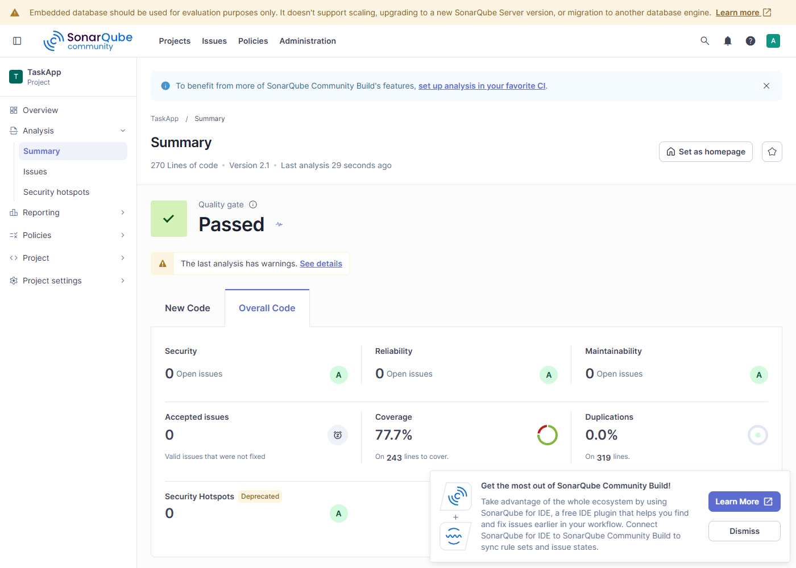
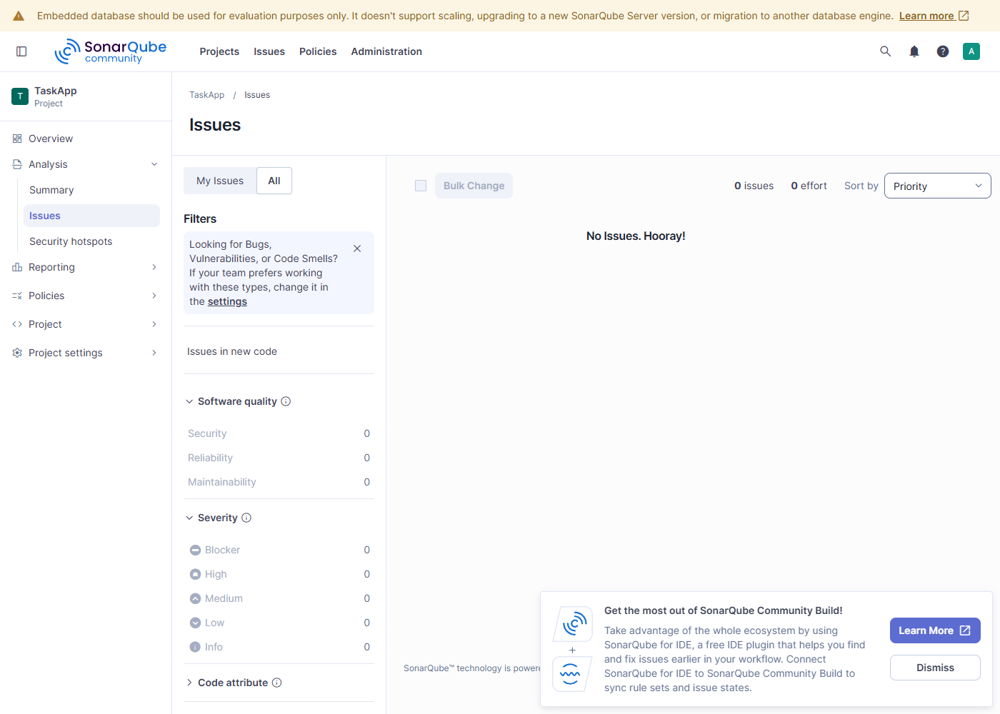

INSTITUCIÓN UNIVERSITARIA ITM
Ingeniería de Sistemas
ASEGURAMIENTO DE LA CALIDAD
Integrante
Juan Sebastian Echeverri Gallego
Medellín, noviembre de 2026
Repositorio: https://github.com/JuanSebastianEcheverriGallego/aseguramientoRepo
Presentación del proyecto. TaskApp es una aplicación web de gestión de tareas personales. Permite a un usuario registrarse, iniciar sesión y administrar su lista de tareas (crear, listar, marcar como completada y eliminar), asignando a cada tarea una prioridad de 1 a 5. Está compuesta por una API REST en Node.js/Express, una base de datos SQLite y una interfaz web en HTML/JavaScript.
Objetivo general. Planificar, diseñar, ejecutar y documentar actividades de aseguramiento de la calidad sobre TaskApp —pruebas funcionales y no funcionales, automatización, gestión de defectos, pruebas de seguridad basadas en OWASP Top 10 y métricas de calidad— para evaluar su nivel de calidad y mejorarlo con base en evidencia.
Justificación. Se eligió un sistema pequeño pero completo porque: (1) tiene los elementos típicos de una aplicación real (autenticación, control de acceso, persistencia, validación de entradas, interfaz web), lo que permite aplicar todas las técnicas del curso; (2) el código fuente está disponible, lo que habilita pruebas unitarias, cobertura y análisis estático con SonarQube; (3) puede ejecutarse localmente sin costo, lo que permite análisis dinámico con OWASP ZAP sin riesgos legales; y (4) su tamaño permite cerrar el ciclo completo: detectar defectos, corregirlos y volver a verificar.
Las personas suelen manejar sus pendientes en notas sueltas sin priorización ni seguimiento. TaskApp centraliza los pendientes de cada usuario, los ordena por prioridad y permite marcar avances, garantizando que cada usuario solo vea y modifique sus propias tareas.
Arquitectura cliente-servidor monolítica en capas: un único proceso Node.js sirve tanto la interfaz estática como la API REST; la persistencia es una base de datos SQLite embebida.
┌──────────────────────┐ HTTP/JSON (Bearer token) ┌──────────────────────────────────────┐
│ Navegador (cliente) │ ───────────────────────────▶ │ Servidor Node.js + Express │
│ public/index.html │ ◀─────────────────────────── │ ├─ Middleware seguridad (cabeceras) │
│ public/app.js │ │ ├─ Rutas /api/register, /api/login │
└──────────────────────┘ │ ├─ Rutas /api/tasks (auth) │
│ ├─ validators.js (reglas negocio) │
│ └─ db.js ──▶ SQLite (taskapp.db) │
└──────────────────────────────────────┘
| Capa | Tecnología |
|---|---|
| Frontend | HTML5, CSS, JavaScript (vanilla, Fetch API) |
| Backend | Node.js 22, Express 4 |
| Base de datos | SQLite (módulo nativo node:sqlite) |
| Seguridad | Hash de contraseñas con scrypt + sal, tokens aleatorios de 256 bits |
| Pruebas | node:test (unitarias/integración), Playwright (E2E UI), autocannon (carga), SonarQube Community (estático), OWASP ZAP 2.17 (dinámico) |
| Infraestructura | Git/GitHub, GitHub Actions (CI), Docker (SonarQube, Sonar Scanner, ZAP) |
Incluido: registro, inicio y cierre de sesión, CRUD de tareas, validación de entradas, control de acceso entre usuarios, interfaz web, rendimiento de la API de listado, cabeceras y manejo de errores HTTP. Excluido: despliegue en producción, HTTPS/TLS (se ejecuta en localhost), compatibilidad multi-navegador y pruebas en dispositivos móviles.
| ID | Requisito |
|---|---|
| RF01 | El sistema deberá permitir el registro de usuarios con nombre de 3 a 20 caracteres (letras, números y _) y contraseña de 8 a 64 caracteres, sin duplicados. |
| RF02 | El sistema deberá permitir la autenticación de usuarios y entregar un token de sesión. |
| RF03 | El sistema deberá permitir crear tareas con título de 1 a 100 caracteres y prioridad entera de 1 a 5 (por defecto 3). |
| RF04 | El sistema deberá listar las tareas del usuario ordenadas por prioridad descendente. |
| RF05 | El sistema deberá permitir marcar una tarea como completada o pendiente. |
| RF06 | El sistema deberá permitir eliminar tareas. |
| RF07 | El sistema deberá permitir cerrar sesión invalidando el token. |
| ID | Requisito | Atributo |
|---|---|---|
| RNF01 | La API deberá responder con latencia p95 < 500 ms y 0 errores con 50 usuarios concurrentes durante 15 s. | Rendimiento |
| RNF02 | Las contraseñas deberán almacenarse con hash y sal, nunca en texto plano. | Seguridad |
| RNF03 | Los endpoints de tareas deberán exigir autenticación y un usuario no podrá acceder a tareas de otro. | Seguridad |
| RNF04 | El sistema no deberá exponer detalles internos (stack traces, tecnología) y deberá enviar cabeceras de seguridad HTTP. | Seguridad |
| RNF05 | El sistema deberá bloquear temporalmente el login tras 5 intentos fallidos consecutivos. | Seguridad |
| RNF06 | Los formularios deberán tener etiquetas accesibles y mostrar mensajes de error claros. | Usabilidad |
| RNF07 | El código deberá mantener calificación A en mantenibilidad y seguridad en SonarQube y duplicación < 3%. | Mantenibilidad |
| Requisito | Criterio de aceptación (Dado / Cuando / Entonces) |
|---|---|
| RF01 | Dado un usuario nuevo válido, cuando se registra, entonces recibe HTTP 201; si el nombre existe recibe 409; si incumple longitudes recibe 400 con mensaje. |
| RF02 | Dadas credenciales correctas, cuando inicia sesión, recibe 200 y un token hexadecimal de 64 caracteres; con credenciales incorrectas recibe 401. |
| RF03 | Título de 1–100 y prioridad 1–5 → 201; fuera de rango → 400. |
| RF04–RF06 | La tarea creada aparece en el listado; al marcarla done=true se refleja; al eliminarla responde 204 y desaparece. |
| RNF01 | El script perf/load.js imprime “CUMPLE”. |
| RNF03–RNF05 | Pruebas AT10, AT11, AT14, AT15, AT16 aprobadas y ZAP sin alertas de riesgo Medio o Alto. |
| Atributo | Cómo se evaluó | Resultado |
|---|---|---|
| Funcionalidad | 12 casos manuales + 16 automatizados + 1 E2E | Cumple tras correcciones (100% aprobados en la versión final) |
| Usabilidad | Prueba E2E con capturas, revisión de mensajes, reglas de accesibilidad de SonarQube | Se detectaron campos sin etiqueta (DEF-05, corregido) y el selector de prioridad no se reinicia (DEF-07, abierto) |
| Fiabilidad | Prueba de carga 15 s sin errores, manejo de JSON malformado, rating de fiabilidad Sonar | 0 errores bajo carga; rating de fiabilidad C → A |
| Rendimiento | autocannon 50 conexiones | p97.5 = 21 ms, ~3.879 req/s (v2) |
| Seguridad | OWASP Top 10, SonarQube, ZAP baseline, pruebas de inyección y control de acceso | 12 alertas ZAP → 2 informativas; 3 defectos altos/medios corregidos |
| Mantenibilidad | SonarQube (code smells, duplicación, rating) | 0 code smells, 0% duplicación, rating A |
| Identificador | PP-TASKAPP-2026-01 |
| Elemento de prueba | TaskApp v1.0 (commit f609bdb) y versión corregida (commit 3976c92) |
| Criterio de suspensión | El servidor no inicia o falla más del 50% de casos por causa de ambiente. |
| Criterio de salida | 100% de casos ejecutados, 0 defectos críticos/altos abiertos, ZAP sin alertas Medias/Altas, Quality Gate de SonarQube aprobado. |
Ver sección 3.4. Se prueban la API REST, la interfaz web y el código fuente de src/ y public/.
| Nivel | Qué se prueba | Casos | Herramienta |
|---|---|---|---|
| Unitarias | Funciones de validación y hash de contraseñas aisladas | AT01–AT06 | node:test |
| Integración | API HTTP + Express + SQLite en un servidor real (puerto aleatorio) | AT07–AT16 | node:test + fetch |
| Sistema | Aplicación completa desplegada en localhost: casos manuales, carga, ZAP | MT01–MT12, RNF01 | curl, autocannon, ZAP |
| Aceptación | Flujo de usuario de punta a punta en el navegador | AT17 (E2E) | Playwright + Edge |
| Estrategia | Aplicación y justificación |
|---|---|
| Funcional (caja negra) | Casos derivados de los requisitos; validan comportamiento observable de la API y la UI. |
| No funcional | Carga (rendimiento), seguridad (SAST/DAST) y usabilidad/accesibilidad; son los riesgos principales de una app web con autenticación. |
| Exploratoria | Sesiones sin guion sobre login y manejo de errores (MT10–MT12); permitieron encontrar DEF-02 y DEF-03, que no estaban cubiertos por requisitos explícitos. |
| Automatizada | Pruebas de regresión que se re-ejecutan tras cada corrección y en CI; justificada porque las correcciones de seguridad pueden romper funcionalidad existente. |
| Técnica | Dónde | Detalle |
|---|---|---|
| Partición de equivalencia | AT02, AT05, MT01, MT04 | Usuario: clase válida [a-zA-Z0-9_], inválidas (espacios, símbolos, ausente, tipo numérico). Prioridad: válida {1..5}, inválidas (<1, >5, decimal, texto). |
| Valores límite | AT01, AT03, AT04, AT05, AT16, MT02, MT03, MT06–MT08 | Usuario 2/3/20/21; contraseña 7/8/64/65; título 0/1/100/101; prioridad 0/1/5/6; intentos de login 5/6. |
| Tabla de decisión | AT08, AT10, AT16 | Ver tabla abajo (login). |
| Pruebas basadas en riesgo / OWASP | AT11, AT13, AT14, AT15 | Control de acceso roto (A01), inyección SQL (A03), configuración insegura (A05). |
Tabla de decisión – login
| Condición | R1 | R2 | R3 | R4 |
|---|---|---|---|---|
| Usuario existe | S | S | N | S |
| Contraseña correcta | S | N | - | S |
| Cuenta bloqueada (≥5 fallos) | N | N | N | S |
| Acción | 200 + token | 401 | 401 | 429 |
| Caso | AT08/MT05 | AT08/MT04 | AT13 | AT16/MT11 |
| Tipo | Detalle |
|---|---|
| Humanos | Juan Sebastian Echeverri Gallego: planeación, diseño y ejecución de pruebas, automatización, gestión de defectos, seguridad y métricas (rol único) |
| Herramientas | node:test, Playwright 1.x (playwright-core) con Microsoft Edge, autocannon 9, curl, SonarQube Community (Docker) + sonar-scanner-cli, OWASP ZAP 2.17 (zap-baseline), GitHub, GitHub Actions |
| Ambiente | Windows 11 Pro, Node.js 22.21, Docker Desktop 28.5, servidor local http://localhost:3000, SQLite en archivo |
| # | Actividad | Responsable | Fecha |
|---|---|---|---|
| 1 | Selección del sistema y levantamiento de requisitos | Juan Sebastian Echeverri Gallego | 09/11/2026 |
| 2 | Plan de pruebas y diseño de casos | Juan Sebastian Echeverri Gallego | 10/11/2026 |
| 3 | Implementación de pruebas automatizadas | Juan Sebastian Echeverri Gallego | 11/11/2026 – 12/11/2026 |
| 4 | Ejecución de pruebas manuales y exploratorias | Juan Sebastian Echeverri Gallego | 14/11/2026 |
| 5 | Prueba de carga | Juan Sebastian Echeverri Gallego | 14/11/2026 |
| 6 | Análisis SonarQube y OWASP ZAP (v1) | Juan Sebastian Echeverri Gallego | 14/11/2026 |
| 7 | Registro y corrección de defectos | Juan Sebastian Echeverri Gallego | 14/11/2026 |
| 8 | Re-ejecución (regresión) y verificación de correcciones | Juan Sebastian Echeverri Gallego | 14/11/2026 |
| 9 | Métricas, informe y entrega | Juan Sebastian Echeverri Gallego | 15/11/2026 – 22/11/2026 |
Precondición común de los casos manuales: servidor iniciado con npm start en http://localhost:3000 sobre una base de datos vacía. Los casos manuales se ejecutaron con curl (guion tests/manual-run.sh para reproducibilidad) y se registró la respuesta completa en evidencias/02-casos-manuales-v1.log y evidencias/08-casos-manuales-v2.log. El “Resultado obtenido” corresponde a la primera ejecución (v1).
| ID / Nombre | MT01 – Registro con valores mínimos válidos |
| Objetivo | Verificar el registro en el límite inferior válido (valores límite) |
| Requisito | RF01 |
| Precondiciones | El usuario qa1 no existe |
| Datos de entrada | username=qa1 (3 car.), password=Clave123 (8 car.) |
| Pasos | 1. Enviar POST /api/register con los datos. 2. Revisar código y cuerpo. |
| Resultado esperado | 201 Created con {"id":1,"username":"qa1"} |
| Resultado obtenido | 201 Created {"id":1,"username":"qa1"} |
| Estado | Aprobado |
| ID / Nombre | MT02 – Registro con usuario de 2 caracteres |
| Objetivo | Verificar rechazo en el límite inválido inferior |
| Requisito | RF01 |
| Precondiciones | Ninguna |
| Datos de entrada | username=qa, password=Clave123 |
| Pasos | 1. POST /api/register. 2. Revisar respuesta. |
| Resultado esperado | 400 con mensaje de longitud |
| Resultado obtenido | 400 "El usuario debe tener entre 3 y 20 caracteres" |
| Estado | Aprobado |
| ID / Nombre | MT03 – Registro con contraseña de 7 caracteres |
| Objetivo | Verificar rechazo de contraseña bajo el límite |
| Requisito | RF01, RNF02 |
| Precondiciones | Ninguna |
| Datos de entrada | username=qa2, password=Clave12 |
| Pasos | 1. POST /api/register. 2. Revisar respuesta. |
| Resultado esperado | 400 con mensaje de longitud de contraseña |
| Resultado obtenido | 400 "La contrasena debe tener entre 8 y 64 caracteres" |
| Estado | Aprobado |
| ID / Nombre | MT04 – Login con contraseña incorrecta |
| Objetivo | Clase inválida de credenciales |
| Requisito | RF02 |
| Precondiciones | Usuario qa1 registrado (MT01) |
| Datos de entrada | qa1 / Incorrecta1 |
| Pasos | 1. POST /api/login. 2. Revisar respuesta. |
| Resultado esperado | 401, mensaje genérico (no revela si el usuario existe) |
| Resultado obtenido | 401 "Credenciales invalidas" |
| Estado | Aprobado |
| ID / Nombre | MT05 – Login correcto |
| Objetivo | Clase válida de credenciales |
| Requisito | RF02 |
| Precondiciones | Usuario qa1 registrado |
| Datos de entrada | qa1 / Clave123 |
| Pasos | 1. POST /api/login. 2. Guardar token. |
| Resultado esperado | 200 con token hexadecimal de 64 caracteres |
| Resultado obtenido | 200 {"token":"c6b7ba99…ae72a5"} (64 car.) |
| Estado | Aprobado |
| ID / Nombre | MT06 – Crear tarea con título de 100 caracteres y prioridad 5 |
| Objetivo | Límite superior válido de título y prioridad |
| Requisito | RF03 |
| Precondiciones | Sesión iniciada (token de MT05) |
| Datos de entrada | title = "T" × 100, priority = 5 |
| Pasos | 1. POST /api/tasks con Authorization Bearer. 2. Revisar respuesta. |
| Resultado esperado | 201 con la tarea creada |
| Resultado obtenido | 201 {"id":1,"title":"TTTT…","priority":5,"done":false} |
| Estado | Aprobado |
| ID / Nombre | MT07 – Crear tarea con título de 101 caracteres |
| Objetivo | Límite superior inválido |
| Requisito | RF03 |
| Precondiciones | Sesión iniciada |
| Datos de entrada | title = "T" × 101, priority = 3 |
| Pasos | 1. POST /api/tasks. 2. Revisar respuesta. |
| Resultado esperado | 400 con mensaje de longitud |
| Resultado obtenido | 400 "El titulo no puede superar 100 caracteres" |
| Estado | Aprobado |
| ID / Nombre | MT08 – Crear tarea con prioridad 0 |
| Objetivo | Límite inferior inválido de prioridad |
| Requisito | RF03 |
| Precondiciones | Sesión iniciada |
| Datos de entrada | title="Prioridad cero", priority=0 |
| Pasos | 1. POST /api/tasks. 2. Revisar respuesta. |
| Resultado esperado | 400 |
| Resultado obtenido | 400 "La prioridad debe ser un entero entre 1 y 5" |
| Estado | Aprobado |
| ID / Nombre | MT09 – Completar tarea y listar |
| Objetivo | Verificar actualización de estado y listado |
| Requisito | RF04, RF05 |
| Precondiciones | Tarea id=1 creada (MT06) |
| Datos de entrada | PATCH /api/tasks/1 {"done":true} |
| Pasos | 1. PATCH. 2. GET /api/tasks. |
| Resultado esperado | 200 y la tarea aparece con done:true |
| Resultado obtenido | 200 {"id":1,"done":true}; listado muestra "done":true |
| Estado | Aprobado |
| ID / Nombre | MT10 – Envío de JSON malformado |
| Objetivo | Verificar manejo seguro de errores (exploratoria) |
| Requisito | RNF04 |
| Precondiciones | Sesión iniciada |
| Datos de entrada | {"title": "sin cerrar |
| Pasos | 1. POST /api/tasks con cuerpo malformado. 2. Revisar respuesta. |
| Resultado esperado | 400 con mensaje genérico en JSON, sin detalles internos |
| Resultado obtenido | 400 en HTML con stack trace completo y rutas del servidor (C:\Users\...\node_modules\body-parser\...) → DEF-02 |
| Estado | Fallido |
| ID / Nombre | MT11 – Intentos repetidos de login fallido |
| Objetivo | Verificar protección contra fuerza bruta (exploratoria, OWASP A07) |
| Requisito | RNF05 |
| Precondiciones | Usuario qa1 existe |
| Datos de entrada | 15 contraseñas incorrectas y luego la correcta |
| Pasos | 1. Enviar 15 POST /api/login erróneos. 2. Enviar el correcto. |
| Resultado esperado | Bloqueo (429) a partir del 6.º intento |
| Resultado obtenido | 15 × 401 y el intento 16 con la clave correcta → 200: no hay bloqueo → DEF-03 |
| Estado | Fallido |
| ID / Nombre | MT12 – Cierre de sesión invalida el token |
| Objetivo | Verificar que el token deja de servir |
| Requisito | RF07 |
| Precondiciones | Sesión iniciada |
| Datos de entrada | Token de MT05 |
| Pasos | 1. POST /api/logout. 2. GET /api/tasks con el mismo token. |
| Resultado esperado | 204 y luego 401 |
| Resultado obtenido | 204 y luego 401 "No autenticado" |
| Estado | Aprobado |
Todos tienen como precondición una base de datos en memoria nueva (se crea al iniciar la suite). El resultado obtenido corresponde a la ejecución final (evidencias/14-pruebas-automatizadas-final.log); en la v1 AT14 falló (DEF-01).
| ID | Nombre / Objetivo | Req. | Datos de entrada (técnica) | Resultado esperado | Obtenido | Estado |
|---|---|---|---|---|---|---|
| AT01 | Longitud de usuario | RF01 | 2, 3, 20, 21 car. (VL) | inválido, válido, válido, inválido | Igual | Aprobado |
| AT02 | Clases de usuario | RF01 | juan_01, "juan perez", "juan<script>", undefined, 12345 (PE) | solo la 1.ª válida | Igual | Aprobado |
| AT03 | Longitud de contraseña | RF01 | 7, 8, 64, 65 (VL) | inv, val, val, inv | Igual | Aprobado |
| AT04 | Título de tarea | RF03 | "", " ", 1, 100, 101 car. (VL+PE) | inv, inv, val, val, inv | Igual | Aprobado |
| AT05 | Prioridad | RF03 | 0,1,5,6, 2.5, "3" (VL+PE) | solo 1 y 5 válidos | Igual | Aprobado |
| AT06 | Hash con sal | RNF02 | misma clave dos veces | hashes distintos, sin texto plano, verificación correcta | Igual | Aprobado |
| AT07 | Registro y duplicado | RF01 | ana / Clave1234 ×2 | 201 y 409 | 201 y 409 | Aprobado |
| AT08 | Login correcto/incorrecto | RF02 | clave buena / mala | 200 + token, 401 | Igual | Aprobado |
| AT09 | CRUD de tareas | RF03–RF06 | "Estudiar QA", p=5 | 201, lista 1, done=true, 204, lista 0 | Igual | Aprobado |
| AT10 | Endpoints protegidos | RNF03 | sin token / token falso | 401 | 401 | Aprobado |
| AT11 | Acceso a tareas ajenas (IDOR) | RNF03 | usuario B borra/edita tarea de A | 404 | 404 | Aprobado |
| AT12 | Validación en API | RF03 | p=6, título vacío | 400 | 400 | Aprobado |
| AT13 | Inyección SQL en login | RNF03 | ' OR '1'='1 | 401 | 401 | Aprobado |
| AT14 | Cabeceras de seguridad | RNF04 | GET /api/health y /no-existe | sin X-Powered-By; nosniff; CSP; CORP | v1: X-Powered-By=Express; final: correcto | Aprobado (v1 Fallido) |
| AT15 | JSON malformado | RNF04 | {"username": "x | 400 sin stack trace | Igual | Aprobado |
| AT16 | Bloqueo de login | RNF05 | 5 fallos y 6.º intento (VL) | 401 ×5, luego 429 | Igual | Aprobado |
| AT17 | E2E interfaz: registro, login, 3 tareas, completar, XSS en título | RF01–RF05, RNF06 | Playwright sobre Edge | 4 tareas visibles, mensaje de error de clave corta, payload XSS mostrado como texto | “Tareas en pantalla: 4 OK” | Aprobado |
VL = valores límite, PE = partición de equivalencia.
Automatizadas – primera ejecución (v1). 13 de 14 aprobadas; AT14 falló porque Express envía X-Powered-By: Express:
✔ AT07 registro exitoso y usuario duplicado (RF01) (68.2181ms) ✔ AT08 login correcto devuelve token y login incorrecto 401 (RF02) (99.3373ms) ... ✖ AT14 cabeceras de seguridad presentes y sin X-Powered-By (2.152ms) ℹ tests 14 ℹ pass 13 ℹ fail 1 AssertionError [ERR_ASSERTION]: Expected values to be strictly equal: 'Express' !== null
Automatizadas – ejecución final. 16 de 16 aprobadas en 0,88 s, con cobertura:
✔ AT07 … ✔ AT16 ✔ AT01 … ✔ AT06 ℹ tests 16 ℹ pass 16 ℹ fail 0 ℹ duration_ms 880.1305 ℹ app.js | 97.04 | 80.39 | 93.75 | 72-73 91-92 ℹ validators.js | 100.00 | 95.65 | 100.00 |
Manuales – evidencia del fallo MT10 (v1), extracto de evidencias/02-casos-manuales-v1.log:
$ curl -X POST /api/tasks -d '{"title": "sin cerrar'
HTTP/1.1 400 Bad Request
X-Powered-By: Express
Content-Type: text/html; charset=utf-8
<pre>SyntaxError: Unterminated string in JSON at position 21 (line 1 column 22)<br>
at JSON.parse (<anonymous>)<br>
at parse (C:\Users\…\final\node_modules\body-parser\lib\types\json.js:96:19) …
Evidencia del fallo MT11 (v1) y su verificación en v2:
v1: 401 401 401 401 401 401 401 401 401 401 401 401 401 401 401
intento 16 con clave correcta: 200 ← sin protección
v2: 401 401 401 401 401 429 429 429 429 429 429 429 429 429 429
intento 16 con clave correcta: 429 ← bloqueado
v2 MT10: HTTP/1.1 400 Bad Request Content-Type: application/json {"error":"Solicitud invalida"}
E2E en interfaz (AT17):



Prueba de carga con autocannon (perf/load.js): 50 conexiones concurrentes durante 15 s contra GET /api/tasks autenticado (usuario con 20 tareas).
| Versión | Peticiones | Req/s prom. | Latencia prom. | p97.5 | Máx. | Errores | RNF01 |
|---|---|---|---|---|---|---|---|
| v1 | 30.696 | 2.046,6 | 23,93 ms | 37 ms | 56 ms | 0 | CUMPLE |
| v2 (final) | 58.177 | 3.879,1 | 12,39 ms | 21 ms | 35 ms | 0 | CUMPLE |
┌─────────┬───────┬───────┬───────┬───────┬──────────┬─────────┬───────┐ │ Stat │ 2.5% │ 50% │ 97.5% │ 99% │ Avg │ Stdev │ Max │ │ Latency │ 16 ms │ 23 ms │ 37 ms │ 40 ms │ 23.93 ms │ 5.54 ms │ 56 ms │ (v1) 31k requests in 15.03s, 62.2 MB read RNF01 (p95 < 500 ms y 0 errores): CUMPLE
Análisis. La latencia p97.5 (cota superior del p95) está más de 10 veces por debajo del umbral de 500 ms y no hubo errores, por lo que el sistema es estable bajo esta carga. La diferencia v1→v2 no se debe a las correcciones (que agregan trabajo, no lo quitan) sino a que en v1 el computador de pruebas estaba descargando imágenes Docker en paralelo; esto muestra que los resultados de rendimiento dependen del ambiente y deben medirse en condiciones controladas. Limitación: SQLite sobre un único proceso no escala horizontalmente; con escrituras concurrentes intensas se esperaría degradación.
| Script | Herramienta / Lenguaje | Descripción y escenarios |
|---|---|---|
tests/validators.test.js | node:test / JavaScript | 6 pruebas unitarias (AT01–AT06) de reglas de validación y hash: valores límite y partición de equivalencia. |
tests/api.test.js | node:test + fetch / JavaScript | 10 pruebas de integración (AT07–AT16): levanta la app en un puerto aleatorio con BD en memoria y prueba registro, login, CRUD, control de acceso, inyección SQL, cabeceras, errores y bloqueo. |
tests/ui-evidencias.js | Playwright (Edge) / JavaScript | Prueba E2E (AT17) del flujo completo en el navegador y captura de pantallas. |
perf/load.js | autocannon / JavaScript | Prueba de carga que evalúa automáticamente RNF01 y retorna código de salida ≠ 0 si no cumple. |
tests/manual-run.sh | Bash + curl | Guion que reproduce los casos manuales MT01–MT12 y deja log. |
tests/sonar-capturas.js, tests/zap-capturas.js | Playwright | Capturas de los dashboards de SonarQube y reportes ZAP. |
Comandos: npm test · npm run test:coverage (genera coverage/lcov.info para SonarQube) · npm run perf.
Resultados: 17 casos automatizados, 17 aprobados en la versión final (1 fallido en v1 que reveló DEF-01). La suite unitaria+integración tarda menos de 1 s, por lo que se puede ejecutar en cada commit.
El repositorio incluye el pipeline .github/workflows/ci.yml (GitHub Actions) que se ejecuta en cada push y pull request:
jobs:
pruebas:
runs-on: ubuntu-latest
steps:
- uses: actions/checkout@v4
- uses: actions/setup-node@v4 (node 22, cache npm)
- run: npm ci
- name: Pruebas unitarias e integracion con cobertura
run: npm run test:coverage ← falla el build si una prueba falla
- name: Levantar servidor
run: npm start & npx wait-on http://localhost:3000/api/health
- name: Prueba de carga (RNF01)
run: npm run perf ← falla si p95 ≥ 500 ms
- name: OWASP ZAP baseline (DAST)
uses: zaproxy/action-baseline@v0.14.0
- uses: actions/upload-artifact@v4 (reporte de cobertura)
Flujo: commit → pruebas unitarias/integración → despliegue efímero → carga → DAST → artefactos. Como mejora, se puede agregar el paso SonarSource/sonarqube-scan-action apuntando a un servidor SonarQube accesible desde internet (o SonarQube Cloud) y bloquear el merge si el Quality Gate falla. Los resultados de cada ejecución quedan visibles en la pestaña Actions del repositorio.
Evidencia de ejecución en CI. Las primeras ejecuciones del pipeline (#1 a #4) fallaron en el paso de pruebas con exit code 7: en un clon limpio no existía la carpeta coverage/ y el reporte LCOV no podía escribirse (en el equipo local sí existía, por eso no se había detectado). Se reprodujo el error clonando el repositorio en una carpeta vacía, se corrigió agregando el script pretest:coverage que crea la carpeta (commit 22c8555) y la ejecución #5 terminó en Success con todos los pasos aprobados: pruebas, servidor, carga y ZAP (ejecución #5). Este caso muestra el valor del CI: detecta problemas de ambiente que no aparecen en la máquina del desarrollador.
Herramienta: registro de defectos versionado en el repositorio GitHub (docs/defectos.md), con trazabilidad a los commits que los introducen/corrigen (los mensajes de commit referencian el ID DEF-xx). Estados usados: Nuevo → Asignado → En corrección → Corregido → Verificado → Cerrado (o Diferido).
| ID | Descripción | Severidad | Prioridad | Estado | Evidencia |
|---|---|---|---|---|---|
| DEF-01 | El servidor expone X-Powered-By: Express y no envía cabeceras de seguridad (CSP, X-Frame-Options, nosniff, Permissions-Policy, COOP/COEP) | Medio | Alta | Cerrado | AT14 (v1), ZAP 10037/10038/10020/10021/10063/90004 |
| DEF-02 | Con JSON malformado la API devuelve el stack trace con rutas internas del servidor (fuga de información) | Alto | Alta | Cerrado | MT10, 02-casos-manuales-v1.log |
| DEF-03 | No existe protección contra fuerza bruta en el login: intentos ilimitados | Alto | Alta | Cerrado | MT11 |
| DEF-04 | Los tokens de sesión no expiran y se guardan en memoria (se pierden al reiniciar; un token robado sirve indefinidamente) | Medio | Media | Diferido (abierto) | Revisión de código src/app.js (Map sessions) |
| DEF-05 | Los campos “título” y “prioridad” no tienen etiqueta asociada (accesibilidad WCAG 2 A) | Bajo | Media | Cerrado | SonarQube v1 (2 bugs), Figura 3 |
| DEF-06 | Las respuestas 404 usan el manejador por defecto de Express que reemplaza la CSP; falta Cross-Origin-Resource-Policy | Bajo | Media | Cerrado | ZAP v2 (10055 en /robots.txt, 90004) |
| DEF-07 | Tras agregar una tarea, el selector de prioridad no vuelve a “3 - Media”, lo que puede inducir a crear tareas con prioridad errónea | Bajo | Baja | Abierto | Figura 2 (AT17) |
| DEF-08 | La dependencia de desarrollo autocannon 8 incluye uuid <11.1.1 con vulnerabilidad moderada GHSA-w5hq-g745-h8pq (3 avisos en npm audit) | Bajo | Media | Cerrado | evidencias/17-npm-audit.log → 18-npm-audit-final.log |
No se encontraron defectos de severidad Crítica (por ejemplo, inyección SQL o acceso a datos de otros usuarios), lo cual fue verificado explícitamente con AT11 y AT13.
| Estado | Fecha | Detalle |
|---|---|---|
| Nuevo | 14/11/2026 | La prueba automatizada AT14 falla en el commit f609bdb: 'Express' !== null. ZAP v1 lo confirma con 6 tipos de alerta. |
| Asignado | 14/11/2026 | Asignado a Juan Sebastian Echeverri Gallego, severidad Medio (facilita reconocimiento y ataques de clickjacking/MIME sniffing), prioridad Alta (corrección simple, bajo riesgo). |
| En corrección / Corregido | 14/11/2026 | Se deshabilita x-powered-by y se agrega un middleware con CSP, X-Frame-Options, nosniff, Referrer-Policy, Permissions-Policy, COEP, COOP y Cache-Control. |
| Verificado (parcial) → nuevo hallazgo | 14/11/2026 | AT14 pasa y ZAP v2 baja de 12 a 4 alertas, pero detecta que las respuestas 404 pierden la CSP → se registra DEF-06 vinculado. |
| Cerrado | 14/11/2026 | Tras corregir DEF-06, ZAP final reporta 0 alertas Medias/Bajas y AT14 (ampliada para 404) pasa. Commit 3976c92. |
SonarQube Community Build (Docker) + sonar-scanner-cli. Primera ejecución (v1): 0 vulnerabilidades, 0 security hotspots, 2 bugs de fiabilidad/accesibilidad (DEF-05), Quality Gate aprobado. El análisis estático no detectó DEF-02 ni DEF-03 porque son problemas de configuración y de lógica ausente, no patrones de código inseguro: esto confirma que SAST por sí solo no es suficiente.

ZAP 2.17 baseline scan (spider + escaneo pasivo) contra la aplicación en ejecución, desde Docker: zap-baseline.py -t http://host.docker.internal:3000.
| Riesgo | v1 | v2 | Final |
|---|---|---|---|
| Alto | 0 | 0 | 0 |
| Medio | 3 | 1 | 0 |
| Bajo | 6 | 1 | 0 |
| Informativo | 3 | 2 | 2 |


| Categoría | Prueba / evidencia | Hallazgo y riesgo | Impacto potencial | Mitigación |
|---|---|---|---|---|
| A01 Control de acceso roto | AT10, AT11 (IDOR), MT12 | Sin hallazgos: consultas filtran por user_id; tarea ajena → 404 | — | Mantener filtro por dueño en todas las consultas. |
| A02 Fallas criptográficas | AT06, revisión | Hash scrypt + sal ✔. Tráfico en HTTP (localhost) | En producción sin TLS se robarían tokens | Desplegar con HTTPS y HSTS. |
| A03 Inyección | AT13, AT17 (XSS), Sonar | Sin hallazgos: consultas parametrizadas, UI usa textContent | — | Mantener sentencias preparadas; CSP como defensa en profundidad. |
| A04 Diseño inseguro | MT11 | DEF-03: sin límite de intentos | Adivinación de contraseñas por fuerza bruta | Bloqueo tras 5 fallos por 15 min (implementado). Mejora: límite por IP. |
| A05 Configuración insegura | MT10, AT14, ZAP | DEF-01, DEF-02, DEF-06: stack traces, X-Powered-By, cabeceras faltantes | Reconocimiento de tecnología/rutas, clickjacking, MIME sniffing | Manejador de errores genérico, cabeceras de seguridad, 404 propio (implementado). |
| A06 Componentes vulnerables | npm audit | DEF-08: 3 avisos moderados en dependencia de desarrollo (uuid vía autocannon 8); producción con 0 | Bajo: solo afecta herramientas de prueba, no el servidor desplegado | Actualizar a autocannon 9 (implementado, npm audit = 0). Ejecutar npm audit en CI / Dependabot. |
| A07 Fallas de autenticación | MT11, revisión | DEF-03 (corregido), DEF-04: tokens sin expiración (abierto) | Un token filtrado da acceso permanente | Expiración de tokens (p. ej. 2 h) y almacenamiento persistente de sesiones. |
| A08 Integridad de software/datos | Revisión | package-lock.json versionado, npm ci en CI | — | Fijar versiones de acciones de CI por hash. |
| A09 Registro y monitoreo | Revisión | No se registran intentos fallidos ni bloqueos | Ataques no detectados | Agregar logs de seguridad (login fallido, 429). |
| A10 SSRF | Revisión | No aplica: el servidor no hace peticiones salientes | — | — |
| KPI | Fórmula | Valor | Interpretación |
|---|---|---|---|
| Casos aprobados/fallidos (1.ª ejecución) | aprobados / ejecutados | Manuales 10/12 (83%); automatizados 14/15 (93%, incluye E2E) | Los fallos fueron detectados en pruebas exploratorias y de seguridad, no en las funcionales básicas. |
| Casos aprobados (final) | aprobados / ejecutados | 29/29 (100%) | Cumple criterio de salida. |
| Cobertura de pruebas (backend) | líneas ejecutadas / líneas | app.js 97,0%, validators.js 100% (ramas 80,4% / 95,7%) | Alta; las líneas sin cubrir son el manejador de error 500 y el 404 de PATCH. |
| Cobertura SonarQube (global) | — | 77,7% | Menor porque public/app.js se prueba con E2E pero no se instrumenta. |
| Cobertura de requisitos | requisitos con ≥1 caso / total | 14/14 (100%) | Todos los RF y RNF tienen al menos un caso. |
| Total de defectos | — | 8 (0 críticos, 2 altos, 2 medios, 4 bajos) | — |
| Tasa de defectos | defectos / casos ejecutados | 8 / 29 = 0,28 | 1 defecto por cada ~3,6 casos: alta efectividad de las pruebas exploratorias y de seguridad. |
| Densidad de defectos | defectos / KLOC (238 LOC v1) | 33,6 def/KLOC | Alta en valor relativo, por ser un sistema pequeño; 5 de 8 son de configuración de seguridad. |
| Tasa de resolución | cerrados / total | 6/8 (75%) | Los abiertos son Medio y Bajo, aceptables según criterio de salida. |
| Tiempo de ejecución | — | Unit+integración 0,88 s; E2E ≈ 5 s; carga 15 s; ZAP ≈ 1 min; Sonar ≈ 30 s | Toda la batería cabe en un pipeline de CI de pocos minutos. |
| Métrica | v1 | Final |
|---|---|---|
| Bugs | 2 | 0 |
| Vulnerabilidades | 0 | 0 |
| Security Hotspots | 0 | 0 |
| Code Smells | 0 | 0 |
| Duplicación | 0,0% | 0,0% |
| Coverage | 74,3% | 77,7% |
| Reliability Rating | C | A |
| Maintainability Rating | A (deuda 0 min) | A (deuda 0 min) |
| Security Rating | A | A |
| Líneas de código | 238 | 270 |
| Quality Gate | Passed | Passed |



Interpretación técnica. El código es pequeño, sin duplicación ni deuda técnica, por lo que la mantenibilidad es A. La fiabilidad C de v1 se debía únicamente a los dos campos sin etiqueta (Sonar los clasifica como bug de severidad media); al corregirlos pasa a A. La calificación de seguridad A y 0 hotspots no significan que la aplicación fuera segura: ZAP y las pruebas exploratorias encontraron 4 problemas de seguridad que el análisis estático no puede ver. La cobertura de 77,7% está por debajo del 80% recomendado por el Quality Gate “Sonar way” para código nuevo debido al frontend; la acción recomendada es instrumentar la prueba E2E o agregar pruebas unitarias de public/app.js.
Valor del aseguramiento de calidad. Aunque TaskApp superaba todas sus pruebas funcionales básicas, el proceso de QA encontró 8 defectos, 2 de ellos altos (fuga de stack trace y fuerza bruta), que habrían llegado a producción. El valor del proceso estuvo en combinar técnicas: cada herramienta encontró cosas distintas (pruebas automatizadas → DEF-01; exploratorias → DEF-02/03; SonarQube → DEF-05; ZAP → DEF-06; revisión de código → DEF-04; E2E → DEF-07; npm audit → DEF-08).
Problemas encontrados y retos técnicos. (1) La corrección de un defecto (DEF-01) no fue completa y la re-ejecución de ZAP reveló DEF-06, lo que muestra la importancia de las pruebas de regresión. (2) Los resultados de rendimiento variaron casi al doble entre ejecuciones por la carga del computador de pruebas, por lo que las mediciones deben hacerse en un ambiente controlado. (3) Configurar SonarQube en Docker requirió cambiar la contraseña por defecto y generar un token antes de poder escanear.
Dificultades de automatización. Probar el bloqueo de login exige aislar el estado entre pruebas (se usan usuarios distintos por prueba); las pruebas de interfaz necesitan esperas explícitas (waitForFunction) para no ser inestables; y la cobertura del frontend no se refleja en SonarQube sin instrumentación adicional.
Aprendizajes. Las técnicas de valores límite y partición de equivalencia permiten pocas pruebas con alta efectividad; una calificación A en SonarQube no garantiza seguridad; automatizar desde el inicio permitió re-ejecutar todo en segundos tras cada corrección.
Trabajo en equipo. El trabajo fue realizado por un solo integrante, por lo que se asumieron todos los roles (analista, automatizador, probador de seguridad y gestor de defectos). Para compensar la falta de revisión cruzada se apoyó en la automatización y en herramientas independientes (SonarQube, ZAP, npm audit) como “segunda opinión”, y se usó Git para dejar trazabilidad de cada corrección con el ID del defecto en el commit. En un equipo se recomendaría que quien corrige un defecto no sea quien lo verifica.
Recomendaciones para futuros proyectos. Definir requisitos no funcionales de seguridad desde el inicio (muchos defectos venían de requisitos implícitos), ejecutar SAST y DAST en el pipeline desde el primer commit, medir rendimiento en un ambiente dedicado, y usar un gestor de incidencias (GitHub Issues/Jira) con flujo de estados formal.
Repositorio: https://github.com/JuanSebastianEcheverriGallego/aseguramientoRepo
| Tipo | Ruta en el repositorio |
|---|---|
| Código fuente del sistema | src/, public/ |
| Scripts automatizados | tests/validators.test.js, tests/api.test.js, tests/ui-evidencias.js, perf/load.js, tests/manual-run.sh, tests/sonar-capturas.js, tests/zap-capturas.js |
| Archivos de configuración | package.json, sonar-project.properties, .github/workflows/ci.yml, evidencias/zap.yaml |
| Reportes exportados | evidencias/zap-v1.html, zap-v2.html, zap-final.html (+ .json), evidencias/*-sonar-metricas-*.txt |
| Logs de ejecución | evidencias/01…18-*.log |
| Capturas | evidencias/*.png |
| Registro de defectos | docs/defectos.md |
| Instrucciones de ejecución | README.md |
Recursos de apoyo: OWASP Top 10 2021 (https://owasp.org/Top10/), ISO/IEC 25010, ISO/IEC/IEEE 29119-3, documentación de SonarQube (https://docs.sonarsource.com/), OWASP ZAP baseline (https://www.zaproxy.org/docs/docker/baseline-scan/), Node.js test runner (https://nodejs.org/api/test.html).